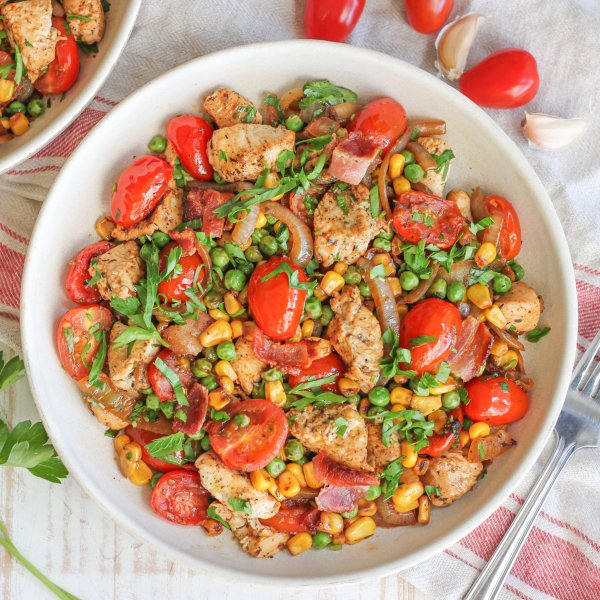

Chicken-Bacon Succotash with Corn, Peas, Tomatoes & Parsley

Total Time
35 min
Nutrition (per serving)
597.5 kcalCalories
53.2 gProtein
34.4 gCarbs
28 gFat
Full nutrition table
| Calories | 597.5 kcal |
| Total fat | 28 g |
| Saturated fat | 8.6 g |
| Trans fat | 0.1 g |
| Cholesterol | 161.1 mg |
| Sodium | 540.1 mg |
| Carbohydrates | 34.4 g |
| Fiber | 7.7 g |
| Sugars | 10.9 g |
| Protein | 53.2 g |
| Potassium | 1394.9 mg |
| Calcium | 77.1 mg |
| Iron | 4.3 mg |
| Vitamin A | 1381.3 IU |
| Vitamin C | 58.5 mg |
| Vitamin D | 10.7 IU |
Cookware
Ingredients
- 8 slicesbacon
- 1 ½ lbchicken breasts, boneless skinless
- 2 cupsfrozen corn
- 2 cupsfrozen peas
- 2 clovesgarlic
- 2 pintsgrape tomatoes
- 1 small bunchItalian (flat-leaf) parsley
- 1 mediumyellow onion
- black pepper
- paprika
- salt
- thyme, dried
Steps
- Preheat a large skillet over medium-high heat.
- Once the skillet is hot, add bacon and cook until crispy, 3-5 minutes per side. Remove to a paper towel-lined plate, leaving the drippings in the skillet.8 slices bacon
- Meanwhile, pat chicken dry with paper towels and cut into bite-sized pieces; season with salt and pepper.1 ½ lb chicken breasts, boneless skinless
1 tsp salt
½ tsp black pepper - Return skillet to medium-high heat; add chicken and stir-fry until golden and cooked through, 4-5 minutes. Use a slotted spoon to transfer the chicken to a plate, leaving the cooking juices in the skillet.
- While the chicken is cooking, using a clean cutting board, peel, halve, and slice onion into thin half-moons. Peel and mince garlic.1 medium yellow onion
2 cloves garlic - Return the skillet to medium-high heat; once the skillet is hot, add onion, garlic, corn, and spices. Cook, stirring occasionally, until the veggies are tender and starting to brown, 4-5 minutes.2 cups frozen corn
2 tsp thyme, dried
1 tsp paprika
½ tsp salt
½ tsp black pepper - Meanwhile, wash, dry, and halve tomatoes lengthwise.2 pints grape tomatoes
- Add tomatoes and peas to the skillet, stirring to combine the succotash; continue to cook, stirring occasionally, until heated through, about 4 minutes.2 cups frozen peas
- While the succotash is cooking, wash, dry, and shave parsley leaves off the stems; discard stems and mince the leaves.1 small bunch Italian (flat-leaf) parsley
- Chop or crumble bacon into pieces.
- Return chicken (with any accumulated juices), bacon, and parsley to the skillet (reserving a small handful of parsley for garnish). Stir to combine and cook until heated through, about 2 minutes.
- To serve, divide succotash between plates or bowls. Top with remaining parsley and enjoy!